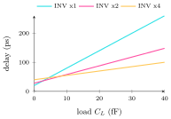

Model
- Linear model: , with . A stronger gate (smaller ) is bigger and loads its own driver more.
- Table model (standard-cell libraries): delay and output transition time are looked up in 2-D tables indexed by input transition and load
 , interpolating between entries; rise and fall differ.
, interpolating between entries; rise and fall differ. - Unit delay: every gate takes 1; good for counting levels, useless for sizing.
- Wires: a long wire is a distributed RC line; the Elmore delay of a line of length is : quadratic in length, so long wires are split by buffers.
Picture

: linear in the load, with slopes falling as the drive strength grows.Bigger gates have more intrinsic delay but a smaller slope: each wins in a range of loads.
Worked example
An inverter with ps drives four inputs of 3 fF each and 8 fF of wire: fF, ps. Replacing it with an x4 inverter (, input capacitance 4× larger) gives 70 ps, but its own input load grows from 3 to 12 fF, slowing the gate that drives it by ps with the x1 slope: the net gain is about 16 ps, not 70. Sizing is a chain problem, not a single-gate one.
Intuition
A gate is a current source charging a capacitor. More capacitance, more time; more current (a bigger gate), less time.
Pitfall
Delay depends on the load, and the load depends on what is connected later: mapping and sizing decisions interact, which is why timing-driven mapping must model loads.